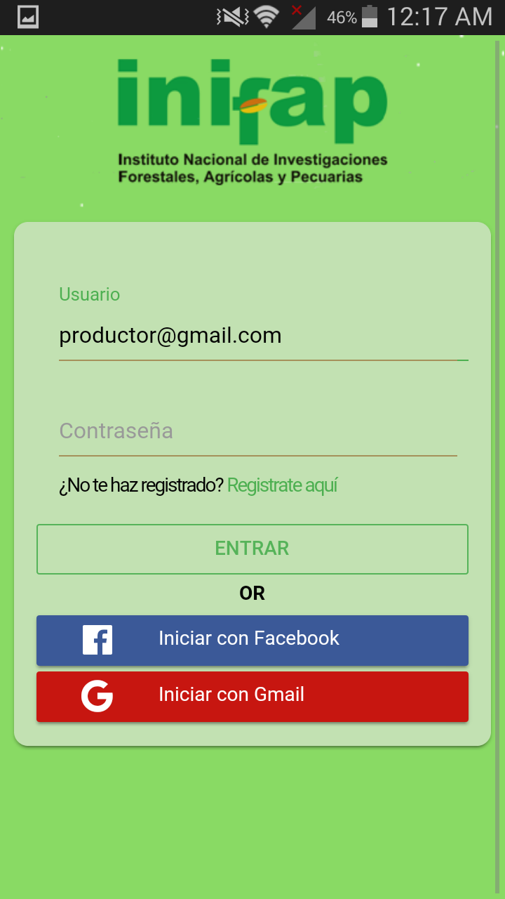
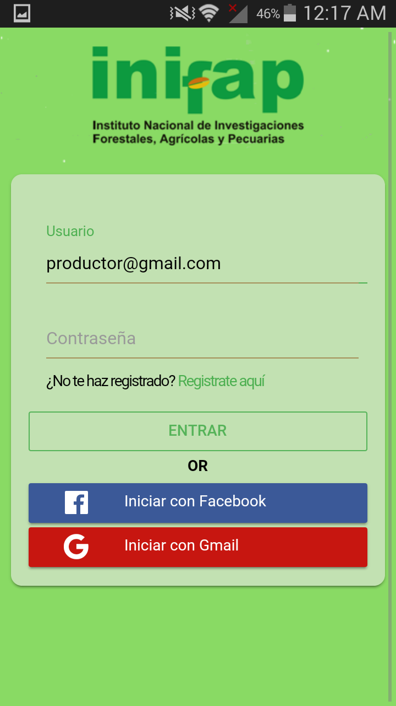

Inifap App
Ionic framework / MEAN Stack
Fecha: 01/07/2018
Puedes Verlo en : www.cideti.inifap.com
Inifap-app es una Herrramienta de Interacción con investigadores del CESIX.
Fecha: 01/07/2018
Puedes Verlo en : www.cideti.inifap.com
Inifap-app es una Herrramienta de Interacción con investigadores del CESIX.
Es un evento de Couching celebrado en Nuevo Vallarta en el Hotel Maribal
Ver Fotos